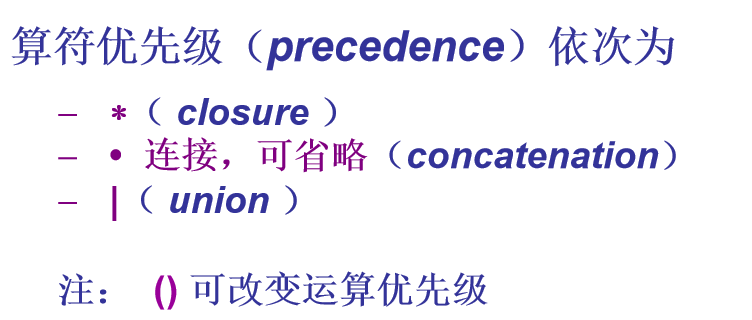
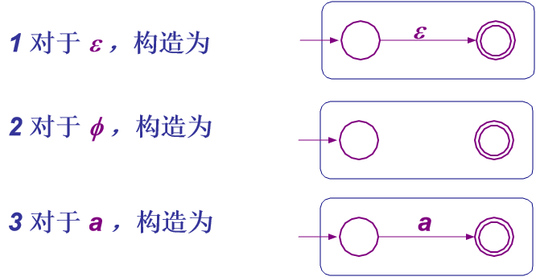
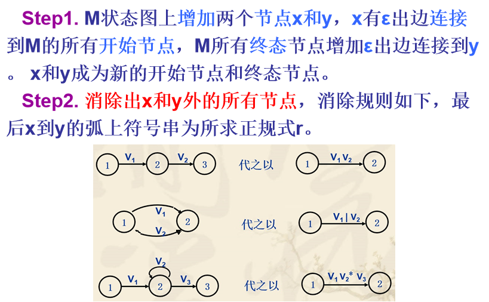
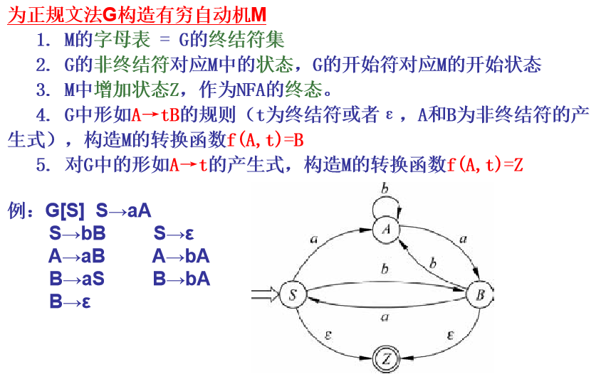
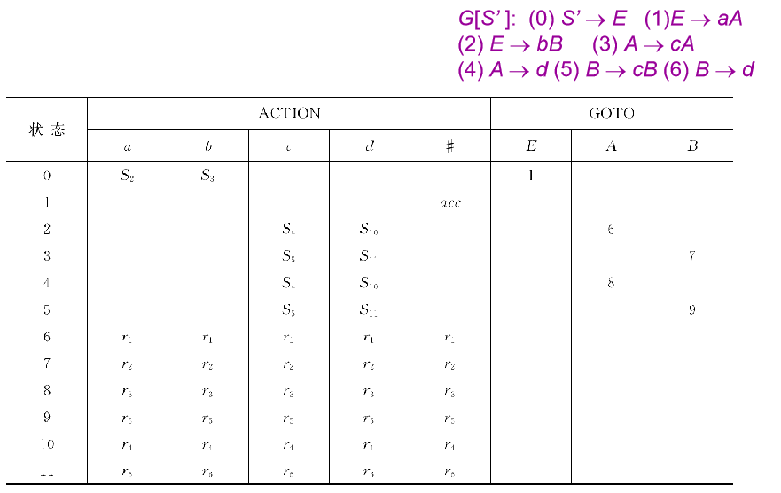

编译程序的逻辑结构
编译程序逻辑结构上至少包含两大阶段
分析（Analysis）阶段
理解源程序，挖掘源程序的语义
综合（Synthesis）阶段
生成与源程序语义上等价的目标程序
编译程序的前端、中端和后端
前端（Front End）
实现主要的分析任务
通常以第一次生成中间代码为标志
后端（Back End）,与目标机相关
实现主要的综合任务（目标代码生成和优化）
通常以从最后一级中间代码生成目标代码为标志
中端（Middle End）
实现各级中间代码上的操作（中间代码生成与优化）
典型编译程序的逻辑过程
词法分析
词法分析程序（Lexical Analyzer）或词法扫描程序（Scanner）的作用
从左至右扫描构成源程序的字符流
识别出有词法意义的单词（Lexemes）
返回单词记录（由单词记号（Token）和单词的属性值组成），或词法错误信息
除以上主要任务外，常伴有如下任务
滤掉空格，跳过注释、换行符，追踪换行标志，复制出错源程序，宏展开，……也可能包含访问符号表的操作
语法分析
判断w是否是文法G的语言，如果是则给出语法分析树。
语法分析过程主导语义分析以及翻译的过程
语义分析
对语法分析后的程序进行语义分析,不符合语义规则时给出语义错误信息
符号表
收集每个名字的各种属性用于语义分析及后续各阶段
出错处理
检查错误
报告出错信息（error reporting）
排错
恢复编译工作（error recovery）
中间代码生成
抽象语法树 AST
三地址码 TAC
目标代码生成
生成目标机代码
小结: 典型编译程序的主要逻辑模块
文法基础
1. 最左（右）推导
最左推导
最右推导
2. 0~3型文法分类及其包含关系
文法与语言的 Chomsky 分类方法
0 型文法
每个产生式左边至少有一个非终结符
1型文法（上下文有关文法）
每个产生式右边长度都 大于等于 左边长度（除S→ε），且S不出现在右部
2型文法（上下文无关文法）
产生式左边只有一个非终结符
3型文法（正规文法）
产生式左边仅是一个非终结符
产生式右边只由1个终结符（或ε）后面跟0到1个非终结符
能够用3型文法定义的语言称为3型语言或正规语言
文法之间的关系
3. 画出语法分析树
语法分析树的果实
归约、推导与分析树之间关系
4. 文法的二义性
二义文法（ambiguous grammars）举例
二义文法概念
二义性的判定
消除二义性
正规式、正规文法、自动机
1. DFA 和 NFA 的等价性
定理: L 是某个 DFA 的语言, 当且仅当 L 也是某个 NFA 的语言.
ε - 闭包
个人理解：ε_CLOSURE(I)表示从 集合I 中的每一个元素出发经过 ε边能够到达的点（包括集合I）。
move函数
个人理解：状态集合 I 中的元素经过a边可以到达的点的集合
子集构造法
NFA$\Rightarrow$DFA
子集构造法之例
2. DFA 的化简：通过合并等价的（或不可区别的）状态
DFA 状态集合上的一个等价关系定义
DFA 状态集合上等价关系的另一种解释
无关状态
无用状态：从开始状态不能到达的状态 死状态：不能到达终止状态的状态
DFA的简化算法
3. 正规表达式
正规表达式算符优先级

举例
4. 正规式和正规文法的等价
正规式转换为正规文法
tips:未在考试重点
个人理解：第二条可以简化成如下
举例
正规文法转换为正规式
5. 正规式与有穷自动机的等价
从正规表达式构造等价的ε - NFA

典型正规表达式对应的状态转换图
从有限自动机M构造等价的正规表达式r

举例
6. 正规文法与构造有穷自动机的等价
有穷自动机M$\Rightarrow$正规文法G
正规文法G构造有穷自动机M

LL(1)自顶向下
1. 消除（直接）左递归
tips：间接左递归不在考点
左递归消除规则
举例
2. 提取左公因子
提取左公因子规则
举例
3. Select集合
First 集合
个人理解：经过任意次推导得到的句型中的第一个终结符
计算 First 集合
个人理解：
- 终结符或ε的first集合为自己
- 产生式右部为空，即$A \rightarrow \varepsilon$ First(A)并上$\varepsilon$
- 产生式右部非空，则First（左部）需并上First（右部）
- First($Y_1Y_2...Y_k$)。找到第一个First集合不包含$\varepsilon$的元素$Y_i$。将前面所有元素的First集合并起来，减去$\{\varepsilon\}$。如果不存在则所有元素的First集合并起来
Follow 集合（后继符号集）
个人理解：Follow(A)求A后面可能字符串的First集合
计算 Follow 集合
个人理解：如果$\beta$为$\varepsilon$，即A后面无内容，则Follow(A)需并上Follow(X)
Select集（预测集合）（Predictive Set）
4.判断是否为LL(1)文法
举例
5. 画出预测分析表
表驱动 LL（1）分析程序
工作原理：借助于预测分析表和一个下推栈
初始时，下推栈只包含#；首先将文法开始符号入栈；之后依如下步骤：
- 若栈顶为终结符，则判断当前读入的单词是否与该终结符相匹配，若匹配，再读取下一单词继续分析；不匹配，则进行出错处理
- 若栈顶为非终结符，则根据该非终结符和当前输入单词查预测分析表，若相应表项中是产生式（唯一的），则将此非终结符出栈，并把产生式右部符号从右至左入栈；若表项为空，则进行出错处理
- 重复（1）和（2），直到栈顶为 # 同时输入也遇到结束符 # 时，分析结束
预测分析表
- 表驱动分析程序需要的二维表M
- 表的每一行A 对应一个非终结符
- 表的每一列a对应某个终结符或输入结束符 #
- 表中的项 M(A,a) 表示栈顶为A，下一个输入符号为a时，可选的产生式集合
- 对于LL（1）文法，可以构造出一个 M(A,a) 最 多只包含一个产生式的预测分析表，可称之为LL（1）分析表
- M(A,a) 不含产生式时，对应一个出错位置
预测分析表的构造算法
举例
6. 对输入块的分析过程
LR(0)
1. 增广文法
增广文法：使开始符号不会出现在产生式的右部
2. 画出活前缀的DFA
活前缀
活前缀与句柄的关系：一个活前缀是某一右句型的前缀，它不超过该右句型的某个句柄
- 活前缀已含有该句柄的全部符号，表明该句柄对应的产生式 A→α的右部α已出现在栈顶
- 活前缀只含该句柄的一部分符号，表明该句柄对应的产生式 A→α1α2 的右部子串α1 已出现在栈顶，期待从输入串中看到α2 推导出的符号串
- 活前缀不含有该句柄的任何符号，此时期待从输入串中看到该句柄对应的产生式 A→α的右部所推导出的符号串
活前缀集合的归纳定义：
LR（0）FSM 的状态
LR（0）FSM 的状态是一个特殊的 LR（0）项目（item）集
一个LR（0）项目是在右端某一位置有圆点的产生式
LR（0）项目解析
计算LR（0）项目集 I 的闭包 CLOSURE(I)的算法
圆点在产生式右部字符串的某个非终结符前，且该非终结符可以进行推导，则圆点也在该终结符推导出的式子的前面
LR（0）FSM 的初态
例子
LR（0）FSM 的状态转移函数

计算 LR（0）FSM 的所有状态的集合
LR（0）FSM 的构造说明
同一状态的项目集中,若不同项目其后继符号相同时, 后继状态也相同
不同状态的项目集中,若出现相同的项目时,则后继状态也相同. （如后图状态I2和I4同有项目A→.cA故经c均到达状态I2 ，状态I2和I4也同有项目A→.d故经d均到达状态I10 ）
LR（0）FSM 的构造举例
LR（0）FSM 的语言
3. 判断是否为LR(0)
LR（0）文法判断
4. action表，goto表
LR分析表
ACTION表
告诉分析引擎：在栈顶状态为k, 当前输入符号是 a 时做什么
| ACTION [k,a]=si | Shift：状态 i 移进状态栈顶，a移进符号栈顶 |
| ACTION [k,a]=rj | Reduce：按第 j 条产生式A→β归约,两栈顶各弹出|β|个元素 |
| ACTION [k,a]=acc | Accept ：分析完成 |
| ACTION [k,a]=err | Error ：发现错误 （常标为空白） |
GOTO表
GOTO[i,A]=j 告诉分析引擎：在依产生式 A→β 归约依Action完成动作后（两栈顶各弹出|β|个元素），栈顶状态为i 时，要将新状态 j 移进状态栈顶（同时： A 移入符号栈顶）
即：在栈顶状态为k, 当前输入符号是 A时做什么。GOTO表就一个shift操作
LR（0）分析表的构造
LR（0）分析表的构造举例

5. 对输入串的分析过程
LR分析
带符号栈的 LR 分析算法
SLR(1)
LR（0）分析的局限性
发现两个状态（项目集）存在移进-归约冲突

向前查看一个符号可解决冲突
SLR（1）分析思想
- 向前查看一个符号来改进对LR（0）状态（项目集）中移进-归约和归约-归约冲突的解决
- 根据下一个输入符号是否属于要归约的非终结符的Follow 集来决定是否进行归约
- 如果LR（0）状态（项目集）中的所有归约项中要归约的非终结符的 Follow 集互不相交，则可以解决归约-归约冲突
- 如果LR（0）状态（项目集）中的所有归约项中要归约的非终结符的 Follow 集与所有移进项目要移进的符号集互不相交，则可以解决移进-归约冲突
- SLR（0）分析表的构造也基于LR（0）FSM
- 只需对 LR（0）分析表进行简单修改使得归约表项只适用于相应非终结符Follow 集中的输入符号
SLR（1）分析表的构造
SLR（1）文法
比较 LR（0）表和 SLR（1）表
在 LR（0）表的 ACTION 表中，归约表项总是整行出现的，即一个归约对于所有输入符号都适用; 不会既有移进又有归约 而在 SLR（1）表的ACTION 表中。归约表项只适用于相应非终结符Follow 集中的输入符号; 可以既有移进又有归约
LR（1）
LR（1）项目

LR（1）FSM
LR（1）FSM的构造
LR（1）FSM的初态
LR（1）FSM的状态转移函数
计算 LR（1）项目集规范族
LR（1）FSM的构造举例
LR（1）分析表的构造
LR（1）分析表的构造举例
LR（1）文法
语义分析、中间代码
0. 语法制导的语义计算基础（不在考点，前导概念）
概念
属性文法（Attribute Grammar）在上下文无关文法的基础上进行如下扩展
- 为每个文法符号关联多个属性（Attribute）
- 为文法的每个产生式关联一个语义规则集合或称为语义动作。
属性
- 属性（Attribute）可用来刻画一个文法符号的任何我们所关心的特性，如：符号的值，符号的名字串，符号的类型，符号的偏移地址，符号被赋予的寄存器，代码片断，等等…
记号
- 文法符号 X 关联属性 a 的属性值可通过 X.a 访问
语义规则（Semantic Rule）
- 在属性文法中，每个产生式 $A \rightarrow \alpha$ 都关联一个语义规则的集合，用于描述如何计算当前产生式中文法符号的属性值或附加的语义动作
属性文法中允许如下语义规则
- 复写（copy）规则，形如X.a := Y.b
- 基于语义函数（semantic function）的规则，形如 b:=f(c1, c2, …, ck) 或 f(c1, c2, …, ck) 其中，b,c1, c2, …, ck是该产生式中文法符号的属性
综合属性（synthesized attribute）
用于“自下而上”传递信息
- 对关联于产生式 $A \rightarrow \alpha$ 的语义规则 b:=f(c1, c2, …, ck) ，如果 b 是 A 的某个属性, 则称 b 是 A 的一个综合属性
综合属性的例子
继承属性（inherited attribute）
用于“自上而下”
传递信息对关联于产生式$A \rightarrow \alpha$ 的语义规则 b:=f(c1, c2, …, ck) ，如果 b 是产生式右部某个文法符号 X 的某个属性，则称 b 是文法符号 X 的一个继承属性
继承属性的例子
继承属性代表自上而下传递的信息
基于属性文法的语义计算
S-属性文法
- 只包含综合属性
- 可以自下而上计算分析树中节点的属性
L-属性文法
L-属性文法的语义计算
采用自上而下的方式可以较方便地进行
可以采用下列基于深度优先后序遍历的算法
该算法与自上而下预测分析过程对应. 因此,基于 LL(1) 文法的 L-属性文法可以采用这种方法进行语义计算.随后将结合翻译模式的进一步讨论分析程序的构造）
采用基于深度优先后序遍历算法进行 L-属性文法的语义计算举例
翻译模式（Translation Scheme）概念
- 适合语法制导语义计算的另一种描述形式
- 可以体现一种合理调用语义动作的翻译算法
- 形式上类似于属性文法，但允许由{ }括起来的语义规则集合出现在产生式右端的任何位置. 这样做的好处是可以显式地表达动作和属性计算的次序，而在前述的属性文法中不体现这种次序
受限的翻译模式
在设计翻译模式时，必须作某些限制，以确保每个属性值在被访问到的时候已经存在
本讲仅讨论两类受限的翻译模式
S-翻译模式，为仅需要综合属性的情形，创建一个语义规则集合，放在相应产生式右端的末尾，把属性的计算规则加入其中即可。该模式类似与S-属性文法，不重复讨论。
L-翻译模式，对于既包含继承属性又包含综合属性的情形，但需要满足：
- （1）产生式右端某个符号继承属性的计算必须位于该符号之前，其语义动作不访问位于它右边符号的属性，只依赖于该符号左边符号的属性（对于产生式左部的符号，只能是继承属性）；
- （2）产生式左部非终结符的综合属性的计算只能在所用到的属性都已计算出来之后进行，通常将相应的语义动作置于产生式的尾部。
翻译模式举例
定点二进制小数转换为十进制小数
1. 声明语句的属性文法
类型表达式（type expressions）
由基本类型，类型名字，类型变量，及类型构造子 （type constructor）归纳定义的表达式
分四类定义
基本数据类型表达式
纯量类型表达式：bool, int, real
有界数组类型表达式：array(I,T)
T∈{ bool, int, real }；I 代表一个整数区间，如 1..10
指针数据类型表达式：pointer(T)
T∈{ bool, int, real }
积类型表达式
<T1, T2, …, Tn>
T1, T2, …, Tn 为上述数据类型表达式；若n=0，则表示为 < >
过程类型表达式
- fun（T）T 是上述积类型表达式
专用类型表达式
- type_error 专用于有类型错误的程序单元
- ok 专用于没有类型错误的程序单元
语义函数
| make_product_3 (V1.type, T.type, L.num) | 生成积类型表达式< t1,…,tm,T.type,…,T.type>T.type共L.num个，V1.type=<t1,…,tm> 。 |
| num.lexval | 为词法分析返回的单词属性值 |
| id.entry | 指向当前标识符对应于符号表中的表项 |
| addtype(id.entry,L.in) | 表示将属性值 L.in 填入当前标识符在符号表表项中的type 域（ 记录标识符的类型） |
| id.name | 为当前标识符的名字； |
| lookup_type(id.name) | 从符号表中查找名字为 id.name 的标识符所对应的表项中 type 域的内容，若未查到该表项或表项中的 type 域无定义，则返回 nil。 |
| type_error | 专用于有类型错误的程序单元 |
| ok | 专用于没有类型错误的程序单元 |
| match（ fun (type1)， type2) | 返回 true，当且仅当 type1， type2 是完全相同的积类型表达式 |
| id.place | id 对应的存储位置 |
| E.place | 用来存放 E 的值的存储位置 |
| E.code | E 求值的 TAC 语句序列(可不止一条四元式) |
| S.code | 对应于 S 的 TAC 语句序列 |
| newtemp | 在符号表中新建一个名字，返回该名字存储位置 |
| newlabel | 返回一个新的语句标号 |
| gen | 生成一条 TAC 语句 |
| || | TAC 语句序列之间的链接运算 |
类型检查程序的设计
语法制导的方法
- 将类型表达式作为属性值赋给程序各个部分
- 设计恰当的翻译模式
- 可实现相应语言的一个类型系统
语法制导的类型检查程序 —— 举例
处理声明的翻译模式
处理表达式的翻译模式（不在考点）
处理语句、过程声明及程序的翻译模式（不在考点）
2. 写出四元式序列（布尔表达式，短路求值）
布尔表达式的语法制导翻译
直接对布尔表达式求值

翻译流程控制布尔表达式至短路代码（L-翻译模式）
语法分析树
通过控制流体现布尔表达式的语义
运行时存储组织
1. 栈区、活动记录、静态链和动态链
栈式存储分配
用于有效实现可动态嵌套的程序结构
- 如实现过程/函数，递归，块层次结构
- 比较：静态分配不宜实现递归过程/函数
运行的时候才能确定数据对象的存储分配结果
过程/函数的实现中，运行栈中的数据单元是活动记录（activation record，后面专门讨论)
- 运行时每当进入一个过程/函数，就在栈顶为该过程/函数分配存放活动记录的数据空间；工作完毕返回时，栈顶的活动记录数据空间随即释放
- 在过程/函数的某一次执行中，其活动记录中会存放生存期在该过程/函数本次执行中的数据对象，以及必要的控制信息单元。
- 在编译期间， 过程/ 函数以及嵌套程序块的活动记录大小（最大值） 应该是可以确定的，如果不满足则应该使用堆式存储管理
活动记录
函数/过程调用或返回时，在运行栈上创建或从运行栈上消去的栈帧（frame）
包含局部变量，函数实参，临时值（用于表达式计算的中间单元）等数据信息以及必要的控制信息
过程活动记录的栈式分配举例
典型的过程活动记录结构
活动过程记录举例
静态链
Display 表的方法要用到多个存储单元或多个寄存器。
一种可选的方法是采用静态链，也称访问链、存取链
所有活动记录都增加一个静态链（如在offset 为 0 处）的域，指向定义该过程的直接外过程（或主程序）运行时最新的活动记录
过程返回时， 当前活动记录要被撤销，为回（ unwind）到调用过程的活动记录（恢复FP），需要在被调用过程的活动记录中有这样一个域，即动态链，指向该调用过程的活动记录（的基址），也称控制链
个人理解：静态链指向定义该过程的外过程，动态链指向调用该过程的外过程
静态链动态链举例
代码生成
1. 支配节点集、回边、自然循环
基本块（basic block）
概念
- 程序中一个顺序执行的语句序列
- 只有一个入口语句和一个出口语句
- 除入口语句外其他语句均不可以带标号
- 除出口语句外其他语句均不可能是转移或停语句
入口语句
- 程序的第一个语句
- 条件转移语句或无条件转移语句的转移目标语句
- 紧跟在条件转移语句后面的语句
划分基本块的算法
针对三地址码（TAC）
步骤
- 出 TAC 程序之中各个基本块的入口语句
- 对每一入口语句，构造其所属的基本块。它是由该语句到下一入口语句（不包括下一入口语句），或到一转移语句（包括该转移语句），或到一停语句（包括该停语句）之间的语句序列组成的
- 凡未被纳入某一基本块的语句，都是程序中控制流程无法到达的语句，因而也是不会被执行到的语句，可以把它们删除
举例
流图（flow graph）
概念
- 可以为构成程序的基本块增加控制流信息，方法是构造一个有向图，称之为流图或控制流图（CFG，Control-Flow Graph）
流图以基本块集为结点集；第一个结点为含有程序第一条语句的基本块；从基本块 i 到基本块 j 之间存在有向边当且仅当
- 基本块 j 在程序的位置紧跟在 i 后,且 i 的出口语句不是转移 (可为条件转移)语句、停语句或者返回语句；
- 或者i 的出口是 goto(S) 或 if …goto(S), 而 (S) 是 j 的入口语句
举例
循环（loop）
支配结点集（dominators）
如果从流图的首结点出发,到达 n 的任意通路都要经过 m，则称 m 支配 n, 或 m 是 n 的支配结点，记为 m DOM n(∀a. a DOM a)
结点n 的所有支配结点的集合, 称为结点 n 的支配结点集,记为D(n)
注意：支配结点也称必经节点，支配节点集也称必经节点集
支配结点集举例
自然循环（natural loop）
假设 n→d 是流图中的一条有向边，如果 d DOM n 则称 n→d 是流图中的一条回边（back edge）
有向边 n→d 是回边，它对应的自然循环是由结点 d ，结点 n 以及有通路到达 n 而该通路不经过 d 的所有结点组成，并且 d 是该循环的唯一入口结点
同时，因 d 是 n 的支配结点，所以 d 必可达该循环中任意结点
注：流图中的任何结点都是从首结点可达的
自然循环举例